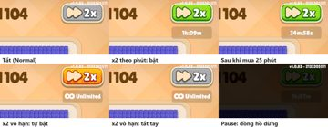
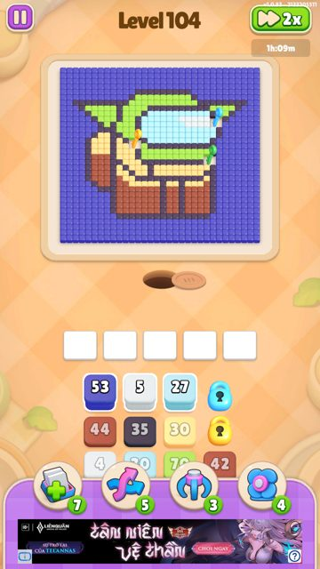
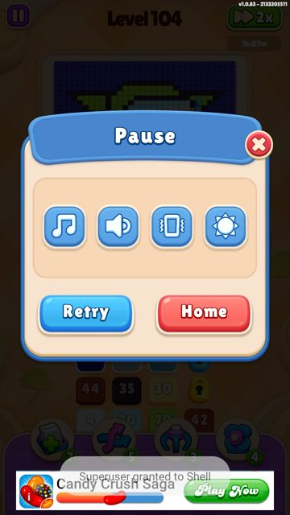
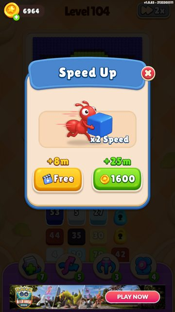
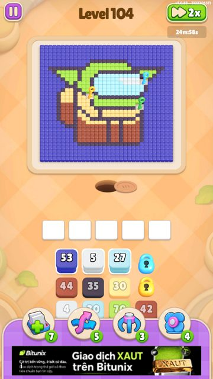
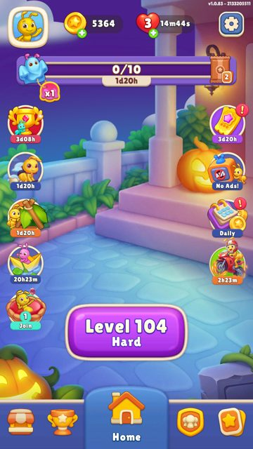
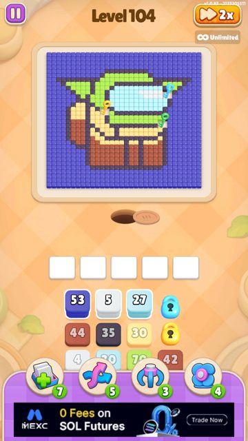

Speed Up (x2 tốc độ kiến)
Mở khoá: Level 1 (tutorial) · 10 class · 121 method · 9 ảnh.
Tổng quan
CODE Nút 2x ở góc phải trên chỉ tăng tốc kiến: GamePlayUpdate gọi Ant.OnGamePlayUpdate(deltaTime × hệ số) với Normal ×1, FastSpeed ×2, HyperSpeed ×3. Game không đổi Time.timeScale nên giao diện và animation khác vẫn chạy tốc độ thường. Có hai tài nguyên. x2 theo phút (FastSpeed, loại 104) là kho số giây, chỉ bị trừ khi đang bật x2 trong màn. x2 vô hạn (InfinityFastSpeed, loại 105) là thời điểm hết hạn, trôi theo giờ thật. CODE Người chơi mới có sẵn 1.200 giây (20 phút); tutorial ở level 1 chỉ khoanh nút 2x, không tặng thêm. Màn nào cũng bắt đầu ở tốc độ thường, trừ khi còn hạn x2 vô hạn thì tự bật. Khi trên bàn hết hộp, game tự chuyển ×3 miễn phí cho kiến làm nốt. PLAYTEST Playtest 30/10 (1.0.83): bật x2 rồi để yên 60 giây, kho giảm khoảng 60 giây; Pause hoặc tắt x2 thì kho đứng yên. Kho 0 giây → popup Speed Up (Free +8 phút /  1.600 coin +25 phút).
1.600 coin +25 phút).
Luồng xử lý
- 1Vào màn: về tốc độ thườngclient
Level.LoadLevelgọiSetupSpeedImmediately(0)→ Normal. NếuHasInfinityFastSpeed(hạn còn sau giờ hiện tại) thìSetTickRate(FastSpeed)luôn.CODEPLAYTEST - 2Tutorial ở level 1client
TutorialManager.OnGunResovle: đang ở level 1, chưa cóTutData.IsPassTutX2, sau 5 hộp được xử lý (GunCountTargetX2Tut) → mởActivityTutSpeedUpkhoanh sáng nút 2x.CODEPLAYTEST - 3Bấm 2xngười chơi
OnClickBtnSpeedUp: lần đầu ghiIsPassTutX2. Đang Normal → mức 2 (FastSpeed), đang FastSpeed → mức 1 (Normal), tra quaRotationSpeedLevels.CODEPLAYTEST - 4Trừ thời gianclient
ConsumeTickRatechạy mỗi frame, chỉ trừ khi TickRate = FastSpeed, màn đang chơi, chưa xong, không Pause và không có x2 vô hạn. Đủ 1 giây thật thì trừ 1 giây kho, cứ 5 giây ghi save. Kho về 0 → tự về Normal, lớp nút mua phủ lên nút 2x.CODEPLAYTEST - 5Hết hộp → ×3client
Level.OnSelectGun/OnGunResolve:GetTotalGunInMap< 1 → sự kiệnSpeedUpRotation→ HyperSpeed ×3 tới hết màn. Không trừ kho vì TickRate không còn là FastSpeed.CODE - 6Kết thúc mànclient
TimeIngameManager.EndGame→ Normal. Màn sau phải bấm lại, trừ khi có x2 vô hạn.CODE - 7Hết giờ → mua thêmngười chơiBấm 2x khi kho = 0 giây và không có x2 vô hạn →
ModalBuySpeedUp: Free (quảng cáo thưởng) +480 giây, hoặc1.600 coin +1.500 giây (thiếu coin → mở Shop). Nhận xong tự bật x2 và đóng popup.CODEPLAYTEST
Config & số liệu
CODEPLAYTESTTrạng thái nút 2x
| Trạng thái | TickRate | Hiển thị (playtest 1.0.83) | Trừ thời gian |
|---|---|---|---|
| Tắt | Normal ×1 | Nút xám, không có nhãn | Không |
| x2 theo phút | FastSpeed ×2 | Nút xanh lá + đếm ngược (từ 1 giờ: “1h:09m”, dưới 1 giờ: “24m:58s”) | 1 giây kho mỗi 1 giây thật |
| x2 vô hạn | FastSpeed ×2 | Nút cam + “∞ Unlimited”; tắt tay thì nút xám nhưng nhãn vẫn còn | Không trừ kho; hạn trôi theo giờ thật |
| Cuối màn (hết hộp) | HyperSpeed ×3 | Không có hình riêng (ObjSpeedUp chỉ có Disable/Able) | Không |
| Hệ số tốc độ kiến | Normal ×1 · FastSpeed ×2 · HyperSpeed ×3 · Paused ×0 (bảng hằng trong GamePlayUpdate) |
|---|---|
RotationSpeedLevels (mức của nút → TickRate) | mức 1 → Normal · mức 2 → FastSpeed · mức 10 → HyperSpeed; mức không có trong bảng → Normal |
| Tutorial | Level 1, sau GunCountTargetX2Tut = 5 hộp được xử lý, một lần (TutData.IsPassTutX2) |
| Lưu kho x2 | Trừ từng giây, ghi save mỗi 5 giây (ResourceData) |
| x2 vô hạn | ResourceData.InfinityFastSpeedExpireTime; nhận thêm = cộng số giây vào hạn cũ (hoặc từ giờ hiện tại nếu đã hết) |
Nguồn thời gian x2
CONFIG| Nguồn | Vị trí / điều kiện | Thưởng |
|---|---|---|
| Người chơi mới | Tài nguyên khởi đầu (ResourceData.InitDefaultValues) | |
| Popup Speed Up | Nút Free – xem quảng cáo thưởng | |
| Popup Speed Up | Nút 1.600 coin (thiếu coin → mở Shop) | |
| Colony Pass | Tier 3 · free, có Card Collection | |
| Colony Pass | Tier 4 · free | |
| Colony Pass | Tier 11 · free / free, có Card Collection | |
| Colony Pass | Tier 21 · free / free, có Card Collection | |
| Colony Pass | Tier 30 · free / free, có Card Collection / premium / premium, có Card Collection | |
| Jungle Treasure | Ô #2 (miễn phí) | |
| Jungle Treasure | Ô #6 (miễn phí) | |
| Jungle Treasure | Ô #9 (miễn phí) | |
| Jungle Treasure | Ô #14 (miễn phí) | |
| Jungle Treasure | Ô #18 (xem quảng cáo) | |
| Sweet Meal | Mốc 14 · có Card Collection / mặc định | |
| Sweet Meal | Mốc 18 · có Card Collection / mặc định | |
| Sweet Meal | Mốc 19 · mặc định | |
| Sweet Meal | Mốc 22 · có Card Collection / mặc định | |
| Speedy Pack | Speedy Pack 1 $6.99 (IAP) | |
| Speedy Pack | Speedy Pack 2 $19.99 (IAP) |
Quét toàn bộ config đóng gói và Remote Config v328: chỉ các mục trên có loại 104/105. Remote Config không phát thêm thưởng x2.
Ghi chú thiết kế
- DIỄN GIẢI x2 theo phút chỉ tốn khi đang chơi và đang bật, nên 20 phút ban đầu đủ cho nhiều màn và tạo thói quen bấm 2x. Khi hết, popup Speed Up đổi thói quen đó thành lượt xem quảng cáo (8 phút) hoặc coin (1.600 coin cho 25 phút, khoảng 64 coin/phút).
- DIỄN GIẢI x2 vô hạn trôi theo giờ thật nên không tích trữ được; nó hợp với hàng bán theo thời hạn (Speedy Pack 7/30 ngày) hơn là thưởng nhỏ.
- CONFIG Dễ nhầm mã: trong danh sách thưởng (
Type), 104/105 là x2 còn 201/202 là Card Pack 2/3; ởItemGroupType(nhóm hiển thị) thì 201/202 mới là FastSpeed/InfinityFastSpeed. Mức 10 → HyperSpeed trongRotationSpeedLevelskhông có code nào gọi; ×3 cuối màn được đặt thẳng quaSpeedUpRotation. - PLAYTEST Popup mua và trạng thái vô hạn được kiểm tra bằng save sửa trên tài khoản test (đặt kho = 0, đặt hạn x2 vô hạn), sau đó đã khôi phục save.
Ảnh chụp (9)









1.600 coin +25m





Class & method (10 class · 121 method)
CODE Tên đầy đủ từ Cpp2IL; chữ ký method lấy từ header pseudo-C (Ghidra decompile 121/121 ok). Pseudo-C nằm ở RecoveredNative/PseudoC/Assembly-CSharp/<Class>.c.
| Class | Method |
|---|---|
| Core.Manager.TimeIngameManager | 13 |
| Core.UI.Activities.ActivityTutSpeedUp | 8 |
| Core.UI.Activities.ActivityTutSpeedUpContext | 29 |
| Core.UI.Modals.ModalBuySpeedUp | 8 |
| Core.UI.Modals.ModalBuySpeedUpContext | 24 |
| FastSpeedCounter | 12 |
| GamePlayUpdate | 18 |
| InfiniteFastSpeedCounter | 8 |
| RotationSpeedLevel | 1 |
| TickRate | 0 |
Core.Manager.TimeIngameManager · 13 method
public TimeIngameManager()public void CheckLose()public void EndGame()private DefaultGlobalConfig get_defaultGlobalConfig()public GunBattleContainer get_GunBattleContainer()public TickRate get_TickRate()private void OnDestroy()private void OnSelectGun()private void OnSelectGunAsync()private void set_GunBattleContainer(GunBattleContainer value)public void SetGunBattleContainer(GunBattleContainer container)public void SetupSpeedImmediately(int speedLevel)private void Start()Core.UI.Activities.ActivityTutSpeedUp · 8 method
public ActivityTutSpeedUp()private UniTask <>n__0(Memory<object> args)protected override void Awake()public UIPresenter get_UIPresenter()public override UniTask Initialize(Memory<object> args)private void set_UIPresenter(UIPresenter value)private void MoveNext()private void SetStateMachine(IAsyncStateMachine stateMachine)Core.UI.Activities.ActivityTutSpeedUpContext · 29 method
public ActivityTutSpeedUpContext()public static Action get_SampleEvent()public static void set_SampleEvent(Action value)public UIModel()public Button get_LinkButton()public UniTask Initialize(Memory<object> args)private void set_LinkButton(Button value)public UIPresenter()private void FocusButtonClick()public UIModel get_Model()public UIView get_View()public UniTask Initialize(Memory<object> args)private void OnButtonFocusClick()private void OnFocusComplete()private void OnFocusUpdate(float progress)private void set_Model(UIModel value)public void set_View(UIView value)private void UnfocusButtonClick()private void UnfocusButtonComplete()private void MoveNext()private void SetStateMachine(IAsyncStateMachine stateMachine)public UIView()public Transform get_ButtonRect()public Transform get_HandClick()public CanvasGroup get_MainView()public UniTask Initialize(Memory<object> args)private void set_ButtonRect(Transform value)private void set_HandClick(Transform value)private void set_MainView(CanvasGroup value)Core.UI.Modals.ModalBuySpeedUp · 8 method
public ModalBuySpeedUp()private UniTask <>n__0(Memory<object> args)protected override void Awake()public UIPresenter get_UIPresenter()public override UniTask Initialize(Memory<object> args)private void set_UIPresenter(UIPresenter value)private void MoveNext()private void SetStateMachine(IAsyncStateMachine stateMachine)Core.UI.Modals.ModalBuySpeedUpContext · 24 method
public ModalBuySpeedUpContext()public static Action get_SampleEvent()public static void set_SampleEvent(Action value)public UIModel()public SerializableReactiveProperty<int> get_SampleValue()public UniTask Initialize(Memory<object> args)private void set_SampleValue(SerializableReactiveProperty<int> value)public UIPresenter()private void AddTimeSpeedUpAds()private void AddTimeSpeedUpCoin()public UIModel get_Model()public UIView get_View()public UniTask Initialize(Memory<object> args)private void OnClickAds()private void OnClickCoin()private void OnClose()private void set_Model(UIModel value)public void set_View(UIView value)private void MoveNext()private void SetStateMachine(IAsyncStateMachine stateMachine)public UIView()public CanvasGroup get_MainView()public UniTask Initialize(Memory<object> args)private void set_MainView(CanvasGroup value)FastSpeedCounter · 12 method
public FastSpeedCounter()private void ApplyVisible()private bool get_IsFastSpeed()private TextMeshProUGUI get_TextCounter()private void OnDestroy()private void OnFastSpeedTick(int value)private void OnInfinityFastSpeedChange(bool hasInfinity)private void OnTickRateChange(TickRate tickRate)private void set_IsFastSpeed(bool value)private void set_TextCounter(TextMeshProUGUI value)private void Start()private string ValueToTime(int value)GamePlayUpdate · 18 method
public GamePlayUpdate()private void BoostSpeed(float value)private void ConsumeTickRate(Unit _)private void GamePlayUpdateCallback(Unit _)public bool get_HasInfinityFastSpeed()public bool get_IsConsumeTickRate()private float get_LastSaveTickRate()public TickRate get_TickRate()private float get_TickRateCounter()private void OnDestroy()private void set_HasInfinityFastSpeed(bool value)private void set_LastSaveTickRate(float value)private void set_TickRate(TickRate value)private void set_TickRateCounter(float value)public void SetTickRate(TickRate tickRate)private void SpeedUpRotation()private void Start()private void WatchInfinityFastSpeed(Unit _)InfiniteFastSpeedCounter · 8 method
public InfiniteFastSpeedCounter()private void ApplyVisible()private GameObject get_AbleInfinite()private void OnDestroy()private void OnInfinityFastSpeedChange(bool hasInfinity)private void OnTickRateChange(TickRate tickRate)private void set_AbleInfinite(GameObject value)private void Start()RotationSpeedLevel · 1 method
public RotationSpeedLevel()